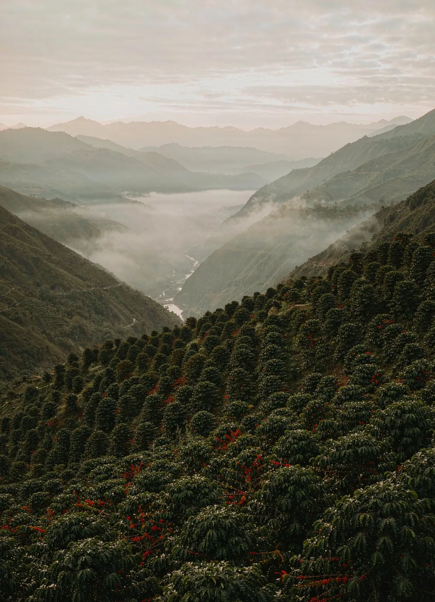

YUNMAN ESTATE
云蔓庄园 · 铁皮卡
2,760 亩自有山地，火山灰土壤、雪山融水灌溉；杯测 89 分（SCA 标准盲评，85 分以上为优秀级）达标才装罐。生豆 30kg 麻袋起订，熟豆零售咨询。
杯测 89 分
US$ 69.00 / 100g

云南咖啡主产区：普洱、保山、怒江坝等区域，海拔 1,500–1,800 米，地处北纬 23°–25° 的咖啡种植黄金带上——火山灰土壤，雪山融水灌溉。
零售与采购均可咨询，按产区与风味挑选。
YUNMAN ESTATE
2,760 亩自有山地，火山灰土壤、雪山融水灌溉；杯测 89 分（SCA 标准盲评，85 分以上为优秀级）达标才装罐。生豆 30kg 麻袋起订，熟豆零售咨询。
企业与批发客户可按产区定制拼配、确认批次与杯测报告——告诉我们你的需求。
采购咨询